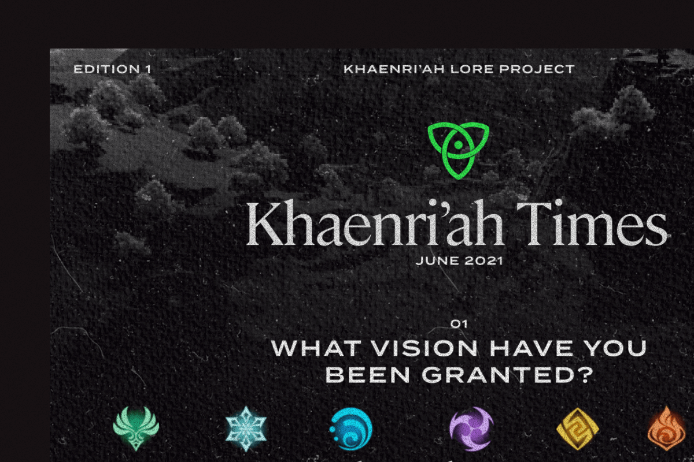

Kumu Play Mobile, June 2021

Spotify Web, Summer 2021

Khaenri'ah Lore Project Web, Archival, Community, For Funsies

The Punishing fo the Philippines Essay

Graphic Design
Meaning
Standing Invitation
Come chat with me!
Are.na
Collection of channels and links around research topics of interest
Manifesto
On objectives & method as a designer, artist, and creator
Now
A detailed list of what Chia is currently working on (academics, personal, career) for Fall 2021.
Toolkit
A write-up on my current digital tools + processes.
Thesis
Progress and development of my Yale Computing & the Arts thesis.
Writing
Favorites
In Defense of Disorder On Life The Web in Decay On Design Angkas: A State, Some Motorcycles, & A Startup On Startups The Punishing of the PhilippinesRecent
Etc.
Design is Fantasy, a talk given for UX+ 2021.
philippine.design, advised by Manuel Miranda.
The saddest designer.
An incremental.
Community advocate at QBO.
Internet histories at badinter.net
Bisita, a recollection.
A website is a world.
Upcoming interactive fiction workshop.
Investing in Filipino students.
Khaenri'ah Lore Project.
In defense of disorder.
Las Pinas-based product studio.
An ethical design book club with Bianca.
Twitter for a multiverse 12 years in the making.
Website for a friend's album.
The Punishing of the Philippines.
Being in love.
A week-in-the-life of students during the pandemic.
Resources for Filipino students exploring tech.
A state, some motorcycles, and a startup.
Two-way surveillance.
The radical need to collaborate.
Pedagogy against dictators.
Fundraising for Filipino students.
A love poem.
Presidential Hopefuls
A radio show about GPA dropping. (Fall 2020)
A universe in sound, after Orteil's Nested.
My Sophomore Review.
Some girls sharing recs.
PH companies & compensations.
A Topsters alternative.
Girls and God.
Round.
Of presidents playing god.
Newsletter on Philippine tech, written by me.
Pinoy videoke on your browser.
All in life must come round.
Zine on Philippine abortion forums.
Fifteen.
Time, videogames, and self.
Taking place the day after you die.
Women & queer-focused Asian literary pub.
A Song for Our Fathers.
National Poetry Month 2018.
Work from age 16 and before.
A place behind the sea.